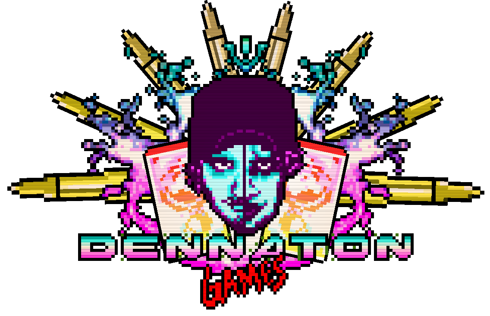

Sponsored by/Спонсор smas_buttermetter


Hotline Miami - піксельна гра-шутер з видом зверху, випущена у 2012 році 2 розробниками Dennaton Games. Події розгортаються під час російсько-американської війни на Гаваях 1985-1989 року та продовжуються до 1991. Найцікавіше в цій грі - що у першій, що у другій частині - ми вбиваємо росіянів! Офіційна сторінка в Steam. У першій частині ми граємо за головного героя без імені, тому дамо йому прізвисько Джакет. Події відбуваються через нашу підсвідомість, а саме: троє людей у масках тварин. Кінь - жінка з милим ставленням до головного героя, сова - грубий чоловік з поганим ставленням, і півень - дивно схожий до нашого протагоніста. Весь процес гри йде від найлегших рівнів вбивання російської мафії - до складних та боїв ім босами. Згодом ми зустічаємо нашого, також безіменного друга - "Бороду" та дівчину з важкої ситуації. Впродовж проходження, ми збираємо маски аби мати спеціальні властивості та навички.
Друга частина знайомисть нас з персонажами, доступними до управління : Фанатами, Бородою та іншими людьми в масках тварин. У цій частині ми можемо вже більше зрозуміти сюжет, хоч і розкиданий у різні моменти гри. На відміну від першої частини, друга дозволяє пограти та дізнатися історію інших другорядних персон. Тепер ми маємо 13 ігрових персонажів. Події гри відбуваються до, під час і після подій першої Hotline Miami. Сторінка в Steam


Hotline Miami вважають однією з найвпливовіших та найкращих інді‑ігор 2010‑х: вона популяризувала synthwave‑естетику, надихнула численні інді‑проєкти і змінила очікування щодо того, як ігри можуть досліджувати насильство як тему. Серія породила фанатські теорії, відео‑аналізи, моди та спільноту, яка продовжує створювати контент і рівні, особливо після додавання інструментів для створення в HM2.


Hotline Miami розробили Dennaton Games — невелика шведська команда, яку складають Джонатан «Cactus» Содерстрьом і Деніс Ведін. Ідея народилася з експериментів у GameMaker і з попередніх прототипів, зокрема «Super Carnage», а також із бажання створити гру з миттєвим, каральним геймплеєм і сильною музичною складовою. Розробка була швидкою та інтуїтивною, багато рішень приймалися експериментально під час прототипування. Цікаво, що Dennaton Games створили першу частину всього за дев’ять місяців, використовуючи те саме програмне забезпечення. У грі також можна почути легендарні саунтреки, які захоплюють ретро атмосферою, написаними, на кшталт El Huervo, Perturbator, M|O|O|N .

Hotline Miami 2: Wrong Number, випущена у 2015 році, розширює всесвіт і додає кілька протагоністів: журналіста Евана Врайта, фанів, корумпованого копа Менні Пардо, сина мафіозного боса, ветеранів війни. Хронологія охоплює події від війни на Гаваях у 1980‑х до Маямі початку 1990‑х. Сюжет подається нелінійно, змушуючи гравця сумніватися, що є реальністю, а що саме вигадкою чи пропагандою. Цей підхід нагадує структуру фільмів Квентіна Тарантіно, де сцени перемішані, а моральні межі розмиті. У грі є алюзії на «Apocalypse Now» через образ полковника з пантерою, що перегукується з Курцом у виконанні Марлона Брандо, а також відсилання до «Cocaine Cowboys» — документального фільму про наркокартелі, який надихнув творців.
Hotline Miami стала символом інді‑сцени, продалася тиражем понад 1,5 мільйона копій до 2015 року й надихнула цілу хвилю ігор у стилі неонового ретро. Вона вплинула на музику, кіно й навіть літературу, адже її структура й теми перегукуються з постмодерністськими романами, де немає чітких відповідей, а є лише питання. Це гра, яка змушує гравця відчувати провину за свої дії, ставить під сумнів межі між реальністю та вигадкою й залишає після себе довгий культурний слід. Саме тому Hotline Miami й досі викликає дискусії серед фанатів і критиків, а її вплив відчутний у сучасній інді‑культурі.

Зроблено -> smas_buttermetter